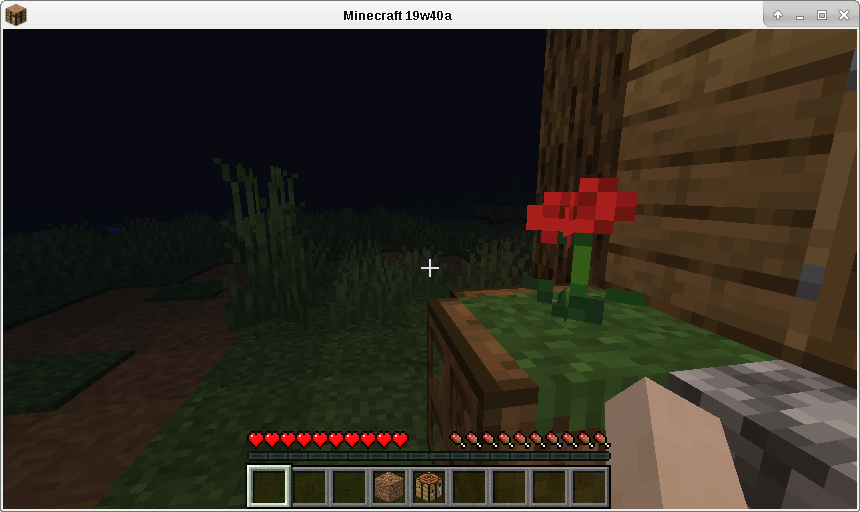

На официальном сайте minecraft можно скачать deb-пакет с программой для запуска игры Minecraft. Этот пакет, однако, не устанавливается в Debian Buster, т.к. требует в качестве зависимости установить openjdk-8-jre, а имеющийся в репозитории пакет openjdk-11-jre его не устраивает. К счастью, это легко исправить. Для этого нужно всего-лишь распаковать пакет, исправить список зависимостей, и запаковать обратно.
Распаковываем пакет в каталог Minecraft:
$ dpkg-deb -R Minecraft.deb Minecraft
Открываем в текстовом редакторе файл Minecraft/DEBIAN/control, находим строчку Depends и заменяем первую зависимость:
Depends: openjdk-11-jre, ...
Запаковываем файлы обратно в пакет:
$ dpkg-deb -b Minecraft minecraft-launcher_2.1.5965_all.deb
Получившийся пакет устанавливаем при помощи следующей команды:
# dpkg -i minecraft-launcher_2.1.5965_all.deb
Пакет не установится, ссылаясь на то, что для его работы не хватает нескольких пакетов. Автоматическая установка недостающих пакетов при помощи команды # apt-get install -f не срабатывает - удаляется сам пакет с программой для запуска Minecraft.
Устанавливаем необходимые зависимости вручную:
# apt-get install ca-certificates openjdk-11-jre gconf-service libpango1.0-0 libcurl4
Возможно также понадобится установить пакет libglfw3:
# apt-get install libglfw3
Теперь пробуем установить программу снова:
# dpkg -i minecraft-launcher_2.1.5965_all.deb
На этот раз всё проходит успешно. Можно запускать игру:
Экран программы для запуска игры:
Меню игры:
Игра:
